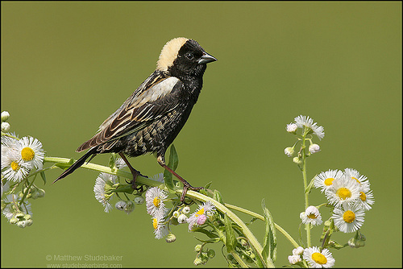

Bobolink

¡Descubre al increíble Bobolink!
- ¡Bienvenido a la naturaleza, donde habita el hermoso Bobolink!
- ¿Sabías que los Bobolinks son pájaros migratorios con un canto alegre y coloridos plumajes? Puedes reconocerlos por su apariencia única y llamativa.
- Su nombre científico es Dolichonyx oryzivorus, pero puedes llamarlos "Bobolinks". ¡Un nombre divertido y único, verdad?
- Viven en praderas y campos, y aunque no son nativos de las Islas Galápagos, podrías avistarlos durante sus migraciones. 🌾
- ¡Sorpresa! Los Bobolinks son viajeros increíbles, recorren largas distancias durante sus viajes. ¡Como pequeños exploradores alados!
- ¡Espero que te haya encantado conocer a estos pequeños cantantes del cielo! 🌈
¡Descubre al Bobolink!
- ¡Bienvenido a la naturaleza, donde habita el hermoso Bobolink!
- Nombre Científico: Dolichonyx oryzivorus (Bobolink)
- ¿Sabías que los Bobolinks son pájaros migratorios con un canto alegre y coloridos plumajes? Puedes reconocerlos por su apariencia única y llamativa.
- Estado de Conservación: Aunque no están en peligro, es importante respetar su entorno y disfrutar de su belleza desde una distancia adecuada.
- ¿Dónde verlos? Durante la primavera y el verano, puedes encontrar a los Bobolinks en praderas y campos de América del Norte, ¡aunque no son nativos de las Islas Galápagos podrías avistarlos durante sus migraciones!
- ¡Curiosidad turística! Los Bobolinks son viajeros increíbles, recorren largas distancias durante sus viajes. ¡Imagina ser testigo de su asombrosa travesía migratoria!
- Recuerda disfrutar de la observación de aves de manera responsable para preservar su hábitat natural. ¡Buen viaje explorador!
Información para biólogos:
- Nombre Científico: Dolichonyx oryzivorus (Bobolink)
- Estado de Conservación: Preocupación Menor
- Distribución Geográfica: Amplia distribución en praderas y campos de América del Norte, migratorio
- Hábitat: Praderas, campos
- Origen: No nativo de las Islas Galápagos; podrían avistarse durante sus migraciones
- Presencia en el Hábitat: Vagabundo durante migraciones
- Dieta: Principalmente semillas e insectos durante la temporada de cría
- Peso: Alrededor de 40 gramos
- Nidificación: En el suelo, construyen nidos en pastos altos
- Migración: Viajan largas distancias entre América del Norte y América del Sur
- Nombres Relacionados: No hay nombres étnicos específicos